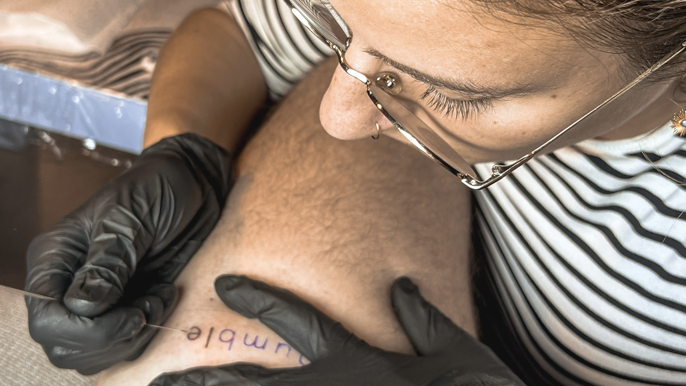

1. Vorbesprechung und Design
Wir besprechen dein Motiv, die Platzierung und passen es gemeinsam so an, dass du zufrieden bist.

Eine meiner großen Leidenschaften ist das Stechen von Handpoke-Tattoos – eine ruhige, meditative Technik, die ohne Maschine auskommt und jedem Tattoo eine ganz individuelle Note verleiht. Auf dieser Seite erfährst du mehr über den Ablauf, bekommst Antworten auf häufige Fragen und kannst dir bereits gestochenen Tattoos anschauen. Schau dich um und lass dich inspirieren!
Wir besprechen dein Motiv, die Platzierung und passen es gemeinsam so an, dass du zufrieden bist.
Die Haut wird an der entsprechenden Stelle gereinigt, desinfiziert und die Schablone aufgetragen. Falls die Stelle doch nicht passt, kann die Schablone jederzeit nochmal neu aufgetragen werden.
Das Tattoo wird mit einer Nadel per Hand gestochen - ruhig und präzise.
Damit dein Tattoo optimal verheilen kann, bekommst du eine Anleitung, wie du es am besten pflegen solltest.
Ein Handpoke-Tattoo ist eine Tätowiertechnik, bei der das Design ohne Maschinen direkt mit einer Nadel und Tinte in die Haut gestochen wird.
Die Dauer hängt von der Größe und Komplexität des Designs ab. Normalerweise dauert es länger als mit einer Maschinen-Tätowierung, aber das Ergebnis ist einzigartig.
Die Schmerzwahrnehmung ist individuell, aber die Technik ist etwas langsamer als mit einer Maschine, was für manche Menschen angenehmer ist.
Die Schmerzwahrnehmung ist individuell, aber die Technik ist etwas langsamer als mit einer Maschine, was für manche Menschen angenehmer ist.